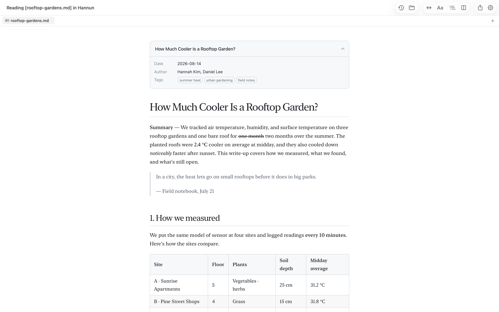
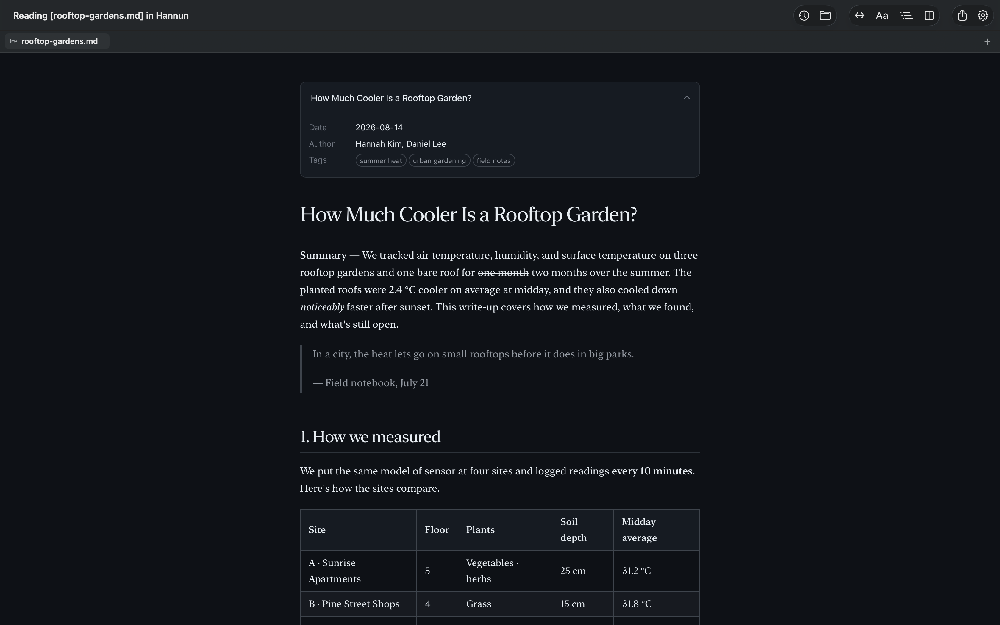
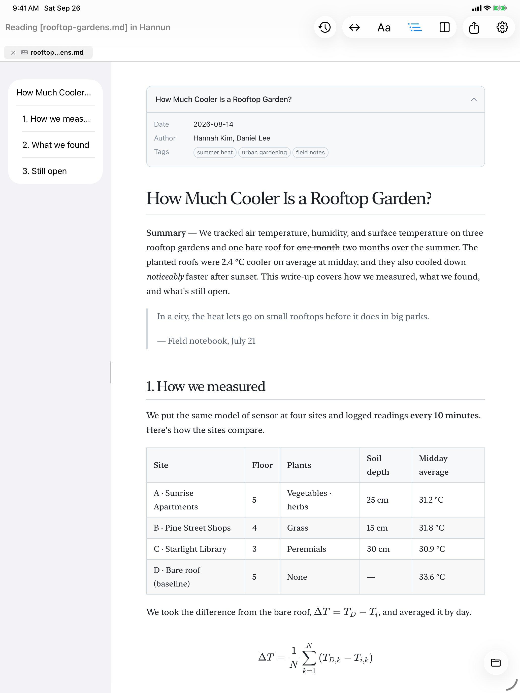
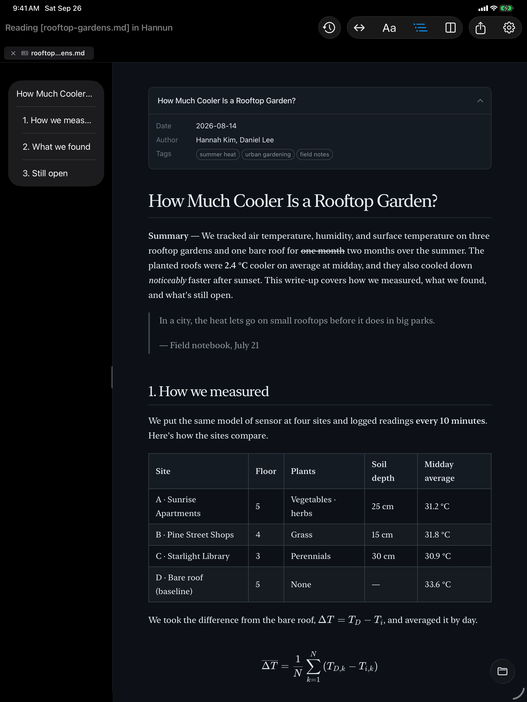
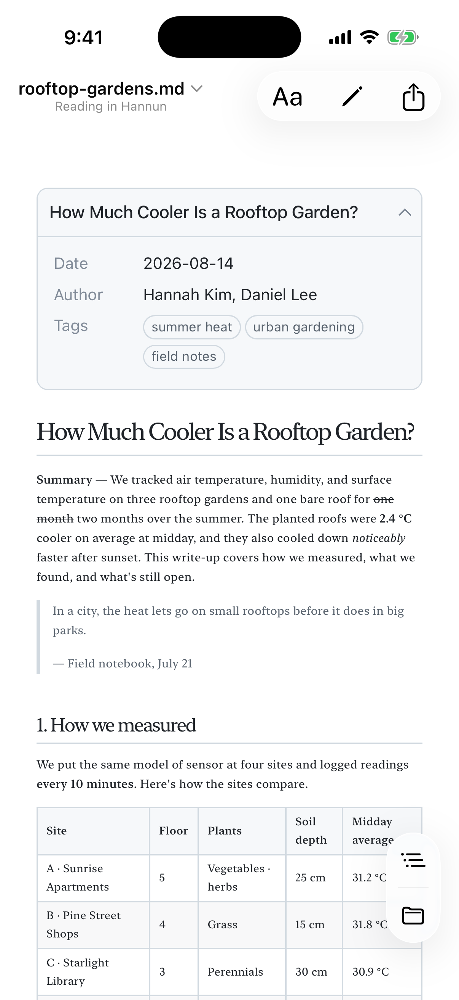
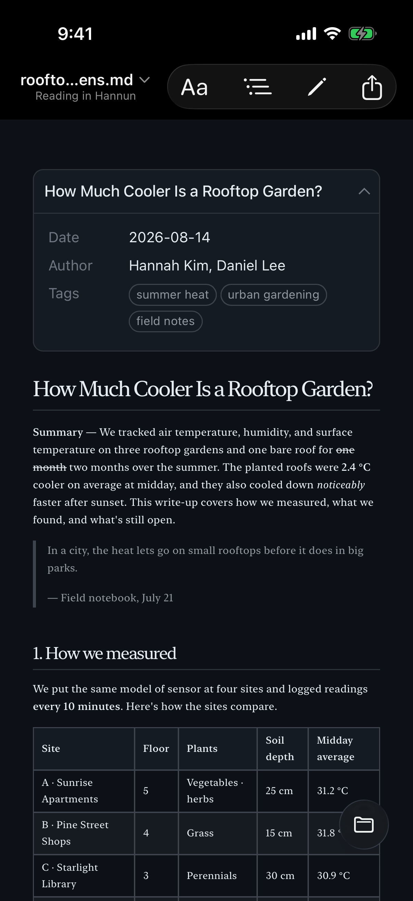

Markdown ViewerMaciPadiPhone
No vault.
No workspace.
Just double-click.
Markdown files should just open — no browser, no extension, no fuss. Hannun shows them the moment you double-click — clean and easy to read.
This isn't a screenshot. It runs on the same rendering engine as Hannun, so go ahead and edit. Nothing you type leaves your browser.
Stays out of your work
I didn’t want to clutter an open project or my browser just to read one unrelated Markdown file.
Open it in VS Codelands in your project windowDrag it into a browserone more tabInstall an extension and allow file accesssomewhere in settings- Double-click the fileopens on its own; close it and you’re done
No opening an app first and hunting for the file, either. Just open the file.
Your file stays
exactly as it was.
Hannun saves without changing the encoding, BOM, or line endings. Edit one character, and only that character changes.
If your documents live in Git, this matters. Change the line endings or encoding and a one-line edit shows up in git diff as a rewrite of the whole file. Save with Hannun and the diff shows only the lines you actually changed — clear for reviewers, and for you later.
An example of an editor that realigns tables and rewrites list markers and line endings its own way
Only the line you changed
Long documents, easy on the eyes
Tables, checkboxes, syntax-highlighted code, math, and diagrams all come out clean. You choose the content width and the fonts.
Try it on this page. The buttons below change the page you're reading right now.
Body and headings are set separately — serif headings over sans-serif text, or the other way around. In the app, the Aa button in the toolbar switches them right away — no trip to Settings.
- Table of ContentsCollects your headings in a sidebar. Drag to resize it, and Hannun remembers the width.
- Zoom inClick an image or diagram to see it up close. Diagrams are vector, so they stay sharp at any size.
- Dark modeChoose Light, Dark, or follow your system setting.
- ZoomPinch, or ⌘+ ⌘−. Works the same in the preview, the editor, and PDFs.
Spot a typo? Fix it right there.
One shortcut, ⌘/, moves between Preview, Split View, and Editor. In Split View, both sides scroll together.
No need to memorize syntax, either. Hold ⌥ and the Syntax Palette appears, laid out like your keyboard. Press the same key again to undo the formatting.
- Korean, Japanese, Chinese inputCharacters don't get mangled while you're composing them, and nothing is auto-formatted behind your back.
- Find & ReplaceWorks the same way in the preview, the editor, and PDFs.
Write like Notepad.
Close it. It’s still there.
Like Notepad on Windows, press ⌘N and start typing. No file name, no save dialog.
Quit the app and come back — your text is right where you left it. Toss it when you’re done, or press ⌘S when it’s worth keeping and choose .md or .txt.
Opens JSON, XML, and PDF, too
Data files open collapsible, so you can fold away what you don't need. They start in Source, which looks just like your code editor. Switch to Tree for names and values only, or List for key, type, and value in columns. In Tree, runs of items with the same shape turn into a table. Whichever view you pick, numbers and values appear exactly as written in the file.
Try the buttons at the top of the window below.
On Mac, iPad, and iPhone
On a Mac, double-click in Finder. On iPad and iPhone, open documents straight from the Files app. Your edits are saved back to the original file.
Light and Dark follow your system setting. Drag the line in the middle of each screenshot to compare.






Everything you'd expect
Documents
- GFM tables · checkboxes · strikethrough
- Syntax highlighting
- KaTeX math
- Mermaid diagrams 22 types
- YAML front matter card
- Links between files new tab
Reading
- 4 content widths
- Separate body & heading fonts
- Table of contents
- Zoom into images & diagrams
- Light · Dark · Auto
Editing
- Preview · Split · Editor
- Synced scrolling
- Syntax Palette Mac
- Editor syntax highlighting
- Scratch documents with auto-backup
Files
- Byte-for-byte saving
- Tabs · session restore
- Picks up outside changes
- Quick Look preview Mac
Other formats
- JSON · XML Source · Tree · List
- YAML Source · folding
- PDF viewing · export
- .txt editing
Languages
- English · 한국어
- 日本語 · 简体中文
Make double-click open Hannun
Out of the box, your Mac opens .md files in another app. Set it once in Hannun under Settings › General › Default App, and from then on a double-click opens Hannun.
Default App
Your documents
never leave your device.
No account, no sign-in, no ads. No analytics and no crash reporting built in. The preview is blocked from reaching the internet, so remote images in a document can't load behind your back.
I made it for myself
Opening a single Markdown file always took more steps than it should. A notepad-style scratch pad is a small thing, too — yet I couldn’t find an app that did it the way I wanted.
So I built one. I use Hannun myself, so I run into the same rough edges you do. Tell me about them, and I’ll fix them.
Two ways to get Hannun
Our website
FreeMac only
- Every feature
- In-app update alerts & install
- iPad · iPhone apps
- Family Sharing
App Store
PaidBuy once, use everywhere
- Every feature
- Mac · iPad · iPhone
- Family Sharing (up to 6 people)
- Automatic updates from the App Store
To be upfront: both versions have exactly the same features. The App Store version adds the iPhone and iPad apps plus Family Sharing — and it's what keeps Hannun going.
Frequently asked questions
Do I need an internet connection?
No. Opening, reading, and editing documents never uses the internet. Math, diagrams, and fonts are all built into the app.
Only the free Mac version from our website connects, to check for new versions — and you can turn that off in Settings.
Images in my document don't show up.
macOS security rules require your one-time permission before Hannun can read images in a document's folder. Click Allow Folder… in the banner at the top.
Images linked from the web aren't loaded, because they can be used to track who's reading.
Will Hannun change or damage my files?
Hannun saves files in exactly the format they were opened in. It doesn't change the encoding, BOM, or line endings.
If another app changes a file you have open, Hannun reloads it. If you were in the middle of editing, it asks which version to keep first.
Does it work on Intel Macs?
No. Hannun requires a Mac with Apple silicon (M1 or later) running macOS 26 or later.